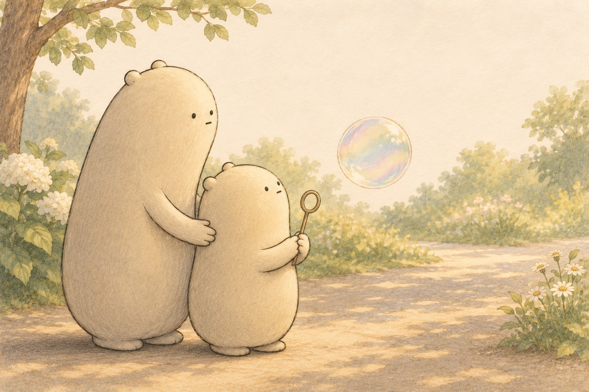
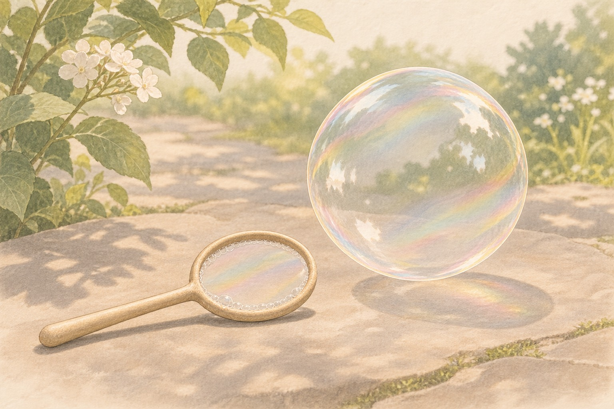
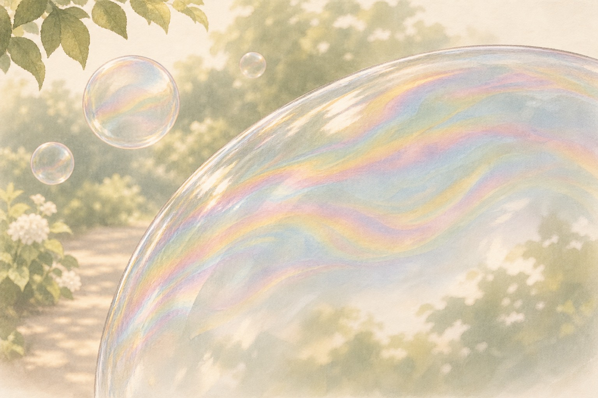
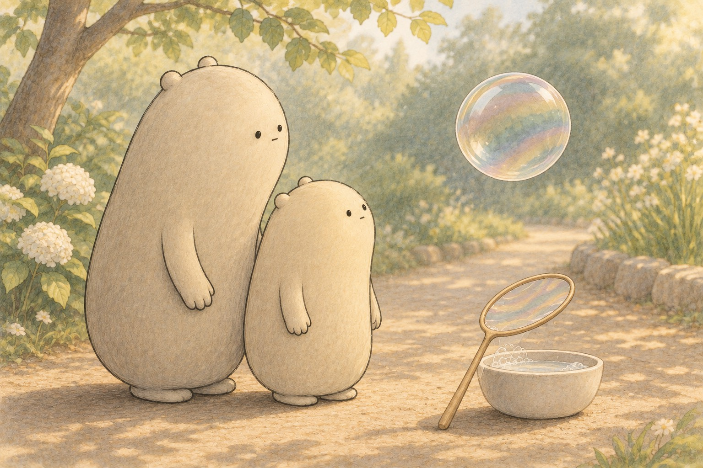
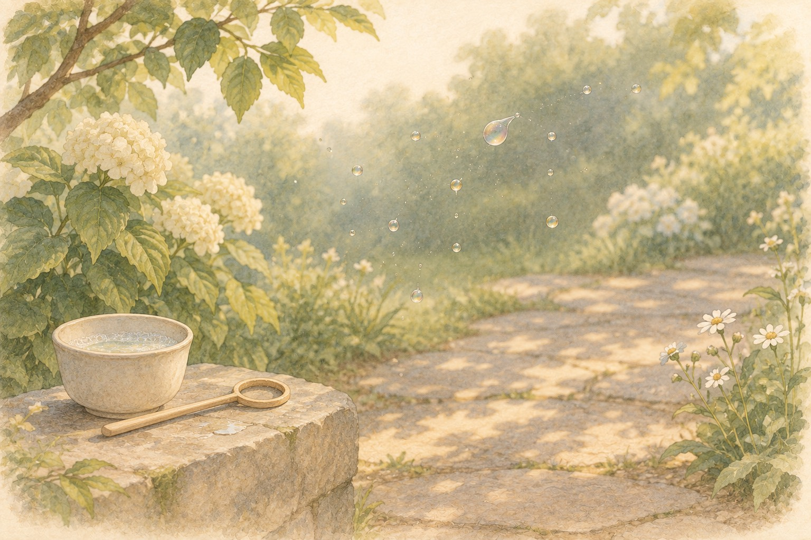
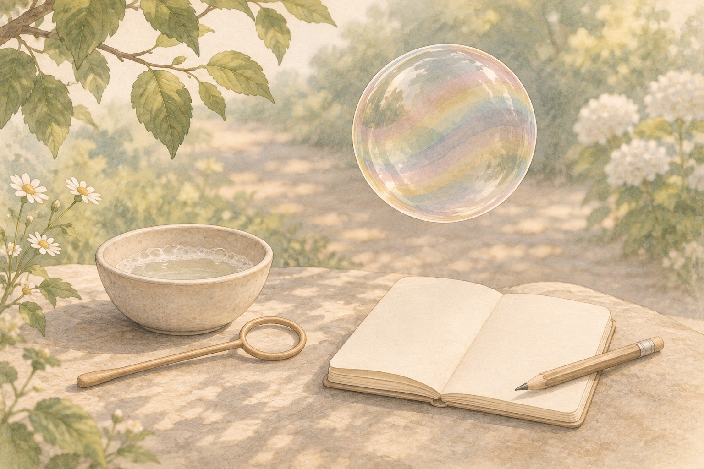

Why do soap bubbles show swirling colors, stay round, and then pop?

Where shall we look?

A watery soap film wraps a pocket of air.
What is a soap bubble made of?
Find the thin shiny wall of the bubble, and the air space inside.
A little explanation & something to try
A soap bubble is a very thin film of water mixed with soap, wrapped around a pocket of air. Soap molecules help the watery film hold together a little longer than plain water would. The wall is so thin you can see through it, yet it still encloses the air.
Try this. Dip a wand and hold up a flat soap film (not a bubble yet). Look at the film edge-on if you can, then blow gently to trap air inside.

Light and a thinning film make colors shift.
Why do bubble colors swirl and shift?
Find places on the bubble where stripes of color move and change.
A little explanation & something to try
Light reflects from the front and back of the thin soap film. Those reflections can add or cancel, so some colors look bright while others fade. As water drains or evaporates, the film gets thinner, and the color pattern shifts. Scientists call this thin-film interference.
Try this. Watch one bubble without poking it. Name two colors you see, then notice whether they move toward the top or bottom as time passes.

Surface tension pulls a free bubble into a sphere.
Why are free-floating bubbles round?
Compare a free bubble in the air with any stretched film still on a wand.
A little explanation & something to try
Surface tension pulls on the soap film from every direction. For a given amount of air inside, a sphere uses the least film area, so a free bubble settles into a round shape. On a wand, the frame can stretch the film into other shapes until the air is trapped.
Try this. Blow one bubble and watch it from the side. Sketch the round outline, then write one sentence about the pull of the film.

When the film breaks, the bubble is gone.
Why does a bubble pop?
Find a dark or dull patch on a bubble just before it vanishes, if you can.
A little explanation & something to try
A bubble pops when its film breaks. Touching it, dusty air, or a dry spot can open a hole. Even without a poke, water leaves the film as it drains and evaporates, so a place can get too thin to hold. Some recipes last longer, but every ordinary soap bubble still has a short life.
Try this. Time how long two bubbles last in still air. Change only one thing (shade versus sun, or a gentle cover) and compare. Do not aim bubbles at faces or eyes.
Bubble story numbers
Six one-step stories about bubbles, wands, and color stripes. Add or subtract to find each answer.

Color stripes are a clue the film is changing.
After you finish, tell which problem felt like watching a bubble pop.
1.Little Wonderer blows 28 bubbles, then 17 more float up. How many bubbles is that altogether?
28 + 17 =
A small hint
Add the ones, then the tens.
2.Big Wonderer counts 64 wand dips in the jar, then uses 29 of them. How many dips remain?
64 − 29 =
A small hint
Trade 1 ten for 10 ones if you need more ones.
3.The little one sketches 36 color stripes, then adds 48 more stripes after the film thins. How many stripe marks are in the notebook?
36 + 48 =
A small hint
Add ones, then tens. Regroup if ones make a ten.
4.A tray holds 81 floating bubbles. Then 37 pop in the breeze. How many bubbles are still floating?
81 − 37 =
A small hint
Subtract ones, then tens. Regroup if needed.
5.They time 19 short-lived bubbles and 56 longer ones. How many bubbles did they time in all?
19 + 56 =
A small hint
Add ones, then tens.
6.A bottle starts with enough mix for 90 bubbles. After play, 38 bubble turns are used. How many turns of mix are left?
90 − 38 =
A small hint
Regroup a ten if the ones are not enough.
Soap bubbles, then deeper
Soap Bubbles
A first bubble
Little Wonderer dips a wand and blows once. A round soap bubble lifts into the soft garden light. Big Wonderer watches beside the little one. The bubble looks simple, yet its wall is busy. What keeps that thin shine from falling apart right away?
What do you notice first about the floating bubble?
A thin soap film
A soap bubble is a thin film of water mixed with soap, wrapped around air. Soap molecules help the watery film hold together longer than plain water would. You can stretch a flat film on a wand before any bubble forms. The wall looks delicate because it truly is thin.
What two parts make up a soap bubble?
Colors that swirl
Light reflects from the front and back of the soap film. Those reflections can add or cancel, so stripes of color appear. As water drains or evaporates, the film thins and the colors shift. Scientists call this thin-film interference. The swirl is a clue, not paint on the bubble.
What makes the colors on a bubble change over time?
Stripes to notice
Big Wonderer sketches the moving color stripes while the little one watches. A bright belt may slide as the film changes thickness. Recording what you see turns a pretty swirl into evidence. Later you can ask whether the top of the bubble thinned faster than the bottom.
How can color stripes become evidence?
Why so round?
They look again at a free bubble beside a stretched film on a wand. Surface tension pulls on the soap film from every side. For the air inside, a sphere uses the least film area, so a free bubble settles into a round shape. The wand can force other shapes until the air is trapped.
Why does a free-floating bubble look round?
A careful pop
Every ordinary soap bubble has a short life. Touch, dust, or a dry thin spot can open a hole in the film. Even in still air, water leaves the wall as it drains and evaporates. When the film breaks, tiny droplets scatter and the sphere is gone. What might help a bubble last a little longer?